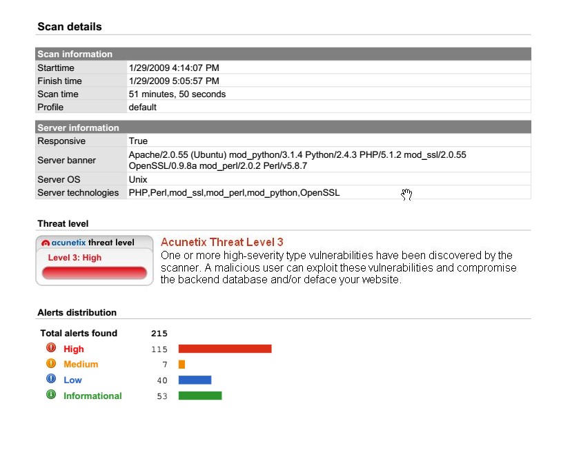

Hacker Methodology
Reconnaissance Overview
-
The first phase of the Ethical Hacker Methodology is Reconnaissance
-
in this phase the hacker collects as much info about your target as you can find
-
you have no direct interaction with the target.
-
-
even if it seems simple, reconnaissance is the single most important phase of a penetration test
-
some tools we can use:
- Wikipedia
- PeopleFinder.com
- who.is
- sublist3r
- hunter.io
- builtwith.com
- wappalyzer
Questions
- Who is the CEO of SpaceX?
A: Elon Musk
- Do some research into the tool: sublist3r, what does it list?
A: subdomains
- What is it called when you use Google to look for specific vulnerabilities or to research a specific topic of interest?
A: Google dorking
Enumeration and Scanning Overview
-
this is the phase where the hacker starts interacting with the target through more specialised tools.
-
the aim of the hacker is to determine the target’s attack surface
- precisely, it means the hacker determines the potential vulnerabilities of the target that may be exploitable (What the target might be vulnerable to)
-
some tools used:
-
dirb - finds commonly-named directories on a website
-
dirbuster - similar to dirb but with a user interface
-
enum4linux - find linux vulnerabilities
-
metasploit - mostly used for exploitation, but it also got some enumeration tools
-
Burp Suite - scan a website for subdirectories and intercept network traffic
-
Questions
- What does enumeration help to determine about the target?
A: attack surface
- Do some reconnaissance about the tool: Metasploit, what company developed it?
A: Rapid7
- What company developed the technology behind the tool Burp Suite?
A: Portswigger
Exploitation
-
the coolest part
-
although it is not as cool if you miss some important info during reconnaissance and enumeration phases
-
Metasploit is usually used, as it includes a lot of scripts that makes life easy.
-
Alternatives:
-
Burp Suite
-
SQL Map
-
msfvenom (custom payloads)
-
BeEF (browser based exploitation)
-
Questions
- What is one of the primary exploitation tools that pentester(s) use?
A: metasploit
Privilege Escalation
-
hacker’s target is to be:
-
An Administrator or System on Windows
-
root, in Linux.
-
-
Many forms:
-
Cracking password hashes found on the target.
-
Finding a vulnerable service or version of a service which will allow you to escalate privileges
-
Password spraying of previosly discovered credentials (password re-use)
-
Using default credentials
-
Finding secret keys or SSH keys stored on a device which will allow pivoting to another machine.
-
Running scripts or commands to enumerate system settings like ‘ifconfig’ to find network settings, or the command ‘find / -perm -4000 -type f 2>/dev/null’ to see if the user has access to any commands they can run as root.
-
Questions
- In Windows what is usually the other target account besides Administrator?
A: System
- What thing related to SSH could allow you to login to another machine (even without knowing the username or password)?
A: keys
Covering Tracks
- even if most ethical penetration testers never have to cover their tracks, it is still a phase.
Reporting
-
outlines everything you have done
-
The findings or Vulnerabilities
-
The criticality of the finding
-
a description of how the finding was discovered
-
remediation recommendations to resolve the finding
-
-
a report usually goes in 3 formats:
- Vulnerability scan results (a simple listing of vulnerabilities)

- Findings summary

- Full Formal Report: https://github.com/hmaverickadams/TCM-Security-Sample-Pentest-Report
Questions
- What would be the type of reporting that involves a full documentation of all findings within a formal document?
A: Full Format Report
- What is the other thing that a pentester should provide in a report beyond: the finding name, the finding description, the finding criticality
A: Remediation Recommendation